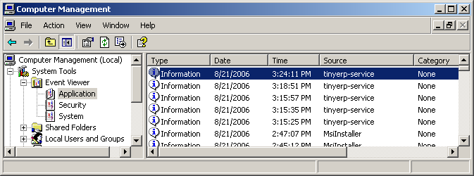
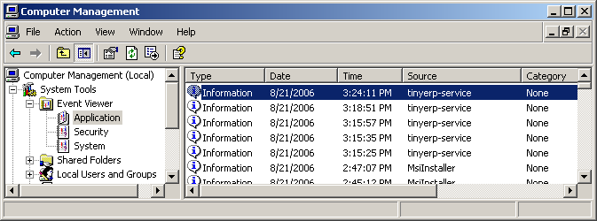

|
 |
Best-selling book on enterprise management |
Open ERP Installation on Windows
PostgreSQL Server installation and configuration
Enter search terms or a module, class or function name.

Retail and Industrial Management, steps towards Sales, Logistics and Manufacturing Integration in the Open Source & Management Collection. |
The server installation works on:
with disks formatted in NTFS (not a FAT or FAT32 partition).
Note
Open ERP Server doesn’t work on Windows 98 or ME; for obvious reasons – these can’t be formatted using NTFS.
You will also need a PostgreSQL server up and running. If it’s not the case, you can read the PostgreSQL Server installation and configuration Section.
The server can be downloaded from the Open ERP website’s download page
Choose Standalone Server if you want to install Open ERP Server standalone and plan to install the Open ERP Client and the PostgreSQL Server separately.
Choose All in One if you want to install PostgreSQL Server, Open ERP Server and OpenERP Client in one shot.
Click on the installer you’ve just downloaded.
The ERP server installs also as a Windows service. This means you don’t have to start the server each time you start the computer and it runs without the need of an open user session.
At the end of the installation, the setup wizard proposes to open, Open ERP Prompt, from where you can prepare your server, as described below.

The Windows service for Open ERP Server is installed during the installation and it’s set up to start the server automatically on system boot.
The configuration file is now automatically saved in the installation directory, in:
C:\Program Files\OpenERP Server\openerp-server.conf
At the end of installation, the setup wizard proposes to open an Open ERP Prompt.
To start the server manually, start the Windows Command prompt and navigate to the installation directory in “C:Program FilesOpenERP Server”:
You need to initialize the server and save its configuration for the service to be able to start automatically.
You also need to specify a logfile to be able to read the output the server writes during its execution.
When in the Server directory, type this command but don’t execute it yet:
openerp-server.exe -d <db_name> -r <db_user> -w <db_password> --db_host=localhost
--db_port=5432 --logfile="<logfile>" -s --stop-after-init
The initialization of Open ERP Server provides the necessary informations for the connection to the database PostgreSQL and indication of the choice of data to load. Here is the explanation of used options:
Before execution of this command you have to decide what usage you want the Open ERP for: see the next section! The command is on only one line, the other long commands as well.
Sample command:
openerp-server.exe -d terp -r postgresadmin -w postgresadminpasswd
--db_host=localhost --logfile="C:\Program Files\OpenERP Server\openerp-server.log"
--db_port=5432 -s --stop-after-init
Here you have to enter the username and password initialized in the Initialise database cluster screen.
When you will execute the initialization command, if you specified a logfile, you will not see any server output in the prompt window.
Everything is written to the logfile. You have only to wait until the prompt comes back.
You have three possibilities for the first launch. This section is really important because the correct initialization can be crucial.
You can initialize the database with Open ERP Server to:
To initialize Open ERP Server with the demo data, you need to add this option to the above command:
--init=all
Sample command:
openerp-server.exe -d terp -r postgresadmin -w postgresadminpasswd
--db_host=localhost --logfile="C:\Program Files\OpenERP Server\openerp-server.log"
--db_port=5432 -s --stop-after-init --init=all
This command will initialize the Open ERP Server and fill its PostgreSQL database with the demo data.
Execute the command with an option excluding the demo data:
--without-demo=all
This will load all modules, but will not load the demo data.
Sample command usage:
openerp-server.exe -d terp -r postgresadmin -w postgresadminpasswd
--db_host=localhost --logfile="C:\Program Files\OpenERP Server\openerp-server.log"
--db_port=5432 -s --stop-after-init --without-demo=all
Recreate a new database:If you have more than one database , you may force the server to initialize by using the “-i all” or “–init=all” command line option.
If you already initialized the database and you have the demo data loaded, you can recreate a new database
Execute the command with an option that updates the data structures:
--update=all
Sample command usage:
openerp-server.exe -d terp -r postgresadmin -w postgresadminpasswd
--db_host=localhost --logfile="C:\Program Files\OpenERP Server\openerp-server.log"
--db_port=5432 -s --stop-after-init --update=all
Now as the server is initialized and the settings are saved, you can finally start the Open ERP Server service.
In the menus there is an icon that directly executes the Open ERP server, but it is only for debugging or testing purposes.
You can now start the Open ERP Server service from the command prompt with a simple command:
net start openerp-service

You can also stop it in a similar way, in case the service is running but you need to reconfigure it:
net stop openerp-service

The service and some runtime information is also accessible in the Computer management in Administration tools.
 

The logging service offers additional information about the execution of the Open ERP Server service.
In the service manager you can define how the service should act in case of server failure.

You can find startup or shutdown information in the Computer Management logging service.
Open ERP Server runtime output can be found in the logfile you specified on the initialization command line.
Given that the server is now running as a Windows service, it doesn’t output any runtime messages, for this the logfile is the only option.
You can find out whether Open ERP Server is running by opening the Windows Task Manager and when you look at the Processes tab, you will see OpenERPServerService.exe and openerp- server.exe and that these two processes are running as SYSTEM user.

Open ERP Server menu contains a direct link to the configuration file used by the service. This way you can edit the configuration and then restart the service to load the new configurations.


Be extremely cautious when editing the server configuration directly, you can crash the entire system with inappropriate values.
For more information, please take a look at the Additional Installation Information and Troubleshooting page where you can find some troubleshooting examples.
Open ERP Installation on Windows
PostgreSQL Server installation and configuration
Enter search terms or a module, class or function name.
|
Retail and Industrial Management, steps towards Sales, Logistics and Manufacturing Integration in the Open Source & Management Collection. |